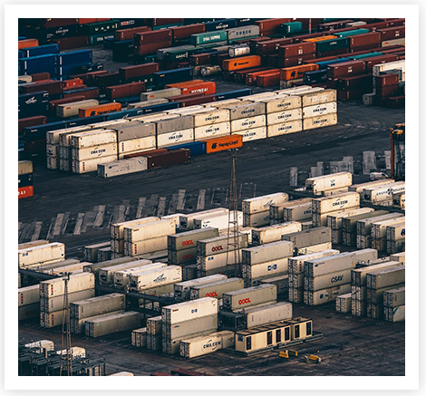

SAKTHI MALASA
INTERNATIONAL FAVOURITES"
India can now boast of a global presence in the International Spices Markets, commanding more than 20% of volume traded. No other country has such a wide array of Spices ranging from cumin and Fenugreek to Cardamom & Pepper.. This exotic spread has fetched us good money too.
Indian exports have achieved a milestone in catering to the International demands, for this segment, Indian curry powders ( with truly South Indian, North Indian flavour) perhaps give them the feeling of " home away from the home".
To fulfil the needs of the Indian Community outside Indian as well as the International Community, the company Product are made available in the Market in many Countries of the World. ' Sakthi Masala' Products are exported to Countries like USA, UK, Singapore, Kuwait, Australia, New Zeeland, Hongkong, France, South Korea, Muscat and Canada.

"QUALITY, FAIR BUSINESS, SOCIAL UPLIFTMENT."
Quality is our watch word and Sakthi Masala believes in providing Quality products of international standard to the consumer at an affordable cost. Despite being in a competitive world, the company believes that only fair business practices will keep one ahead of their competitors. The growth of a company is not complete without the development of the society it lives in. Sakthi Masala therefore feels privileged to play its role in the development of society though its equal arm Sakthi Devi Charitable Trust. Quality Products, Fair Business Practice and Social Upliftment is our mission.
Quality Policy
We, at Sakthi Masala Private Limited are committed to providing customers with range of safe and hygienic Spice Powders and Mixed Spice Powders. It will be our endeavor to understand customers expectations. This will be achieved though continial improvement of Quality Managrment System and Process improvement. We aim at overall leadership in the Market though empowered employees, sustained efforts and continually improving our Product Quality.